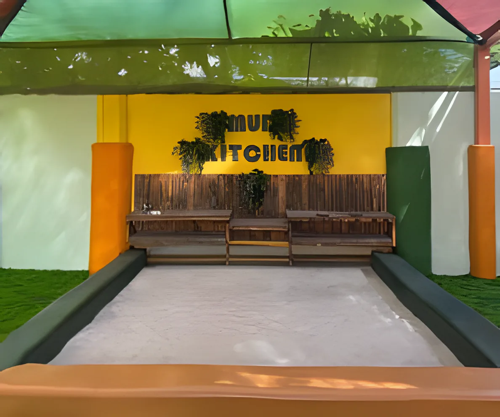

Learningthrough play
At Grandma Nursery children learn hands-on, through play, exploration and their senses. Our curriculum puts the EYFS framework together with Montessori teaching methods, so children grow in learning and as people.
- Ages
- 2 months to 4 years
- Open
- 6:30am to 6:30pm
- Framework
- EYFS with Montessori
- Languages
- English, French and Arabic
- Day care
- 2:30pm to 6:30pm, extra fee
- Registration
- Open all year
Child Learning Centres
Our Child Learning Centres get children involved in their own learning. Each one supports one of the five areas of early childhood.
- 1Communication and languageCircle Time Centre: vocabulary, listening and expression.
- 2MathematicsMath and Construction Centre: problem solving, logic and number sense.
- 3ArtsCreative Centre: imagination, creativity and fine motor skills.
- 4Personal and social developmentDiscovery Centre: independence, teamwork and self-awareness.
- 5Physical developmentFitness Centre: gross motor skills, coordination and healthy habits.
Room by room
01English CentreJolly Phonics, letter sounds and first reading
Children meet language through interactive activities and the Jolly Phonics programme, learning letter sounds and how to form letters. Children will:
- Use words and simple sentences to communicate
- Recognise letters and their sounds
- Take part confidently in group activities
- Read and write their own names
- Enjoy listening to stories
- Answer simple questions with growing confidence
02French & Arabic Centre40 minutes of each language, every day, at no extra cost
We believe in multilingual learning. Children are introduced to French and Arabic for 40 minutes each day. They learn to:
- Communicate in more than one language
- Get along easily with children from different backgrounds
- Strengthen focus and memory
- Become open-minded, adaptable learners
03Math CentreCounting, shapes and patterns
Children learn to recognise, count, write and recite numbers in order, and explore shapes and patterns. This helps them:
- Build a strong start in early numeracy
- Think logically and solve problems
- Spot and make patterns
- Recognise and use basic shapes
04Art CentreA craft every day, linked to the week's theme
Children explore colours, shapes and textures, with daily craft projects linked to weekly themes. Children will:
- Recognise and name colours confidently
- Draw simple shapes and designs
- Make a variety of arts and crafts
- Use brushes and tools for fine motor skills
05Discovery CentreSenses, self-care and getting along
Hands-on activities that help children grow socially and emotionally and do more for themselves. They learn to:
- Observe and explore with all their senses
- Use scissors and tools safely
- Dress independently and look after themselves
- Practise lacing and fine motor skills
- Share, take turns and cooperate
- Express themselves confidently
06Fitness CentreMovement, yoga and games
Physical activity is an essential part of growing up. Children are encouraged to:
- Walk, hop, run and jump with balance and control
- Try yoga and other body-strengthening activities
- Improve flexibility, coordination and stamina
- Build confidence in using their bodies
07BooBoo RoomFor our youngest, from 2 months
Infants are cared for in a warm setting that follows their own rhythm: fed when hungry, resting when tired, and playing when they are alert and happy. Teachers support them by:
- Singing, reading stories and playing together
- Soft play and time outdoors
- A calm, loving room to grow in

08Soft Play CornerClimb, crawl, jump and roll, safely indoors
A safe, lively indoor space where children move freely. It helps them:
- Build strength and coordination
- Develop balance and flexibility
- Explore movement without fear of injury
- Enjoy active play somewhere secure

09Outdoor playFresh air, friends and new games
Outdoor play keeps children active, social and imaginative. Outside, children:
- Get stronger through movement and play
- Make friends with other children
- Discover new games and teamwork
- Grow in confidence in the fresh air

Every day at Grandma Nursery
6:30am to 6:30pmDrop off from 6:30 in the morning. Children aged 2 months to 4 years.
After the programme
Day careFrom 2:30pm to 6:30pm, for an additional fee. Ask your branch.
Our readiness programme for children aged 2 to 4 years, delivered to your door every week, to help your child make a good start at preschool.
صندوق جراندما: برنامج تمهيدي يصل إلى منزلكم كل أسبوع، مع أنشطة ممتعة وفيديو يشرح كل نشاط.
- 1A new box every week, with fun topics in literacy, maths and creativity.
- 2Delivered to your doorstep.
- 3Videos show how to do each activity, so your child gets the most out of it.
Our camps
- Winter campGrandma Camps through the year
- Spring campAsk your branch for this season's dates
- Summer campCall 800 2229
Joining Grandma Nursery
Book a tour
Call 800 2229 or WhatsApp your branch and we will arrange a visit. We look forward to meeting you.
Fill in the form
The enrolment application form is available at the nursery. We take registrations all year round.
Bring the documents
Registration fee, your child's QID and birth certificate, two passport photos, the immunisation card, and both parents' QID and passport copies.